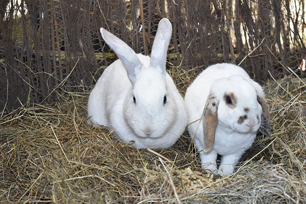
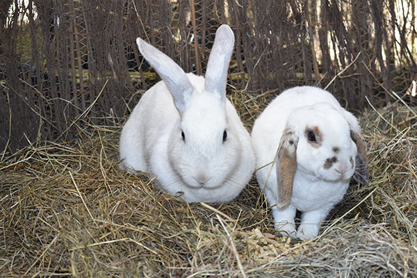

About
Wellington Rabbit Rescue is a registered not for profit charity that takes on abused, neglected, sick, injured, abandoned, and unwanted rabbits.
While they are in our care they receive any veterinary treatment they may require. They are housed in large enclosures so they can exhibit natural rabbit behaviour, and they are fed a high quality diet.
Once the rabbits are healthy and ready for adoption they are desexed and vaccinated. If any of the rabbits in our care are too young to be desexed they are sent home with a desex agreement which we follow up once the rabbit is old enough.
We inspect any potential homes. We require the rabbits to be housed in a large area - they need to be able to run and jump. We also encourage new owners to include enrichment toys. Our minimum standard is an area 2 metres long, 1 metre wide, 1 metre high as well as a warm dry house at least 61x61cm.
We do not send rabbits home on their own as they are social creatures. If the potential new family has an existing rabbit then we help mix/bond the rabbits before the adoption can be processed.
Any rabbits that cannot be rehomed will remain in our care. We only resort to euthanasia in extreme cases such as very ill or severely injured rabbits. In this case we will have them humanely euthanized by our vet to prevent further suffering.
You can help by donating to:
Wgtn Rabbit Rescue
12-3143-0359794-00
 
